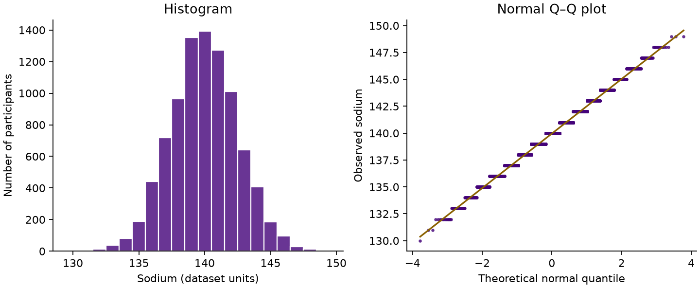

Section 01 of 11
Before you start
Keep this page beside SPSS as you work through the examples and exercises.
8,860 synthetic participants, with cholesterol before and after treatment, smoking, diabetes and demographic variables. These data are just for practise and may not reflect real clinical associations.
Keep two windows open
Put this page beside SPSS, or switch with Alt + Tab on Windows and ⌘ + Tab on Mac. The website gives instructions and feedback; you run the analysis in SPSS.
Make a choice before looking at the output.
Follow the example, then change one thing.
Turn the result into a sentence.
There are no scores or locked topics. You can reveal a hint or answer whenever you need it. Use Help if your output differs.
What question are you asking?
| Question | Topic |
|---|---|
| What should I check about the distribution? | Checking for normality |
| Do two independent groups have different means? | Independent-samples t-test |
| Does the mean change within the same people? | Paired-samples t-test |
| Do three groups have different mean cholesterol? | ANOVA |
| How do typical measurements compare between groups or paired observations? | Comparing medians |
| Are two categorical variables associated? | Crosstabs and chi-square |
| How does average cholesterol change vary with several predictors? | Linear regression |
| How do the odds of diabetes vary with several predictors? | Binary logistic regression |
These starting points assume this workshop’s study design. Repeated measurements, clustered data, survival times and other outcomes may need different methods.
Section 02 of 11
Prepare your data
Create labelled groups and a change score you can interpret.
Open and check the starting dataset
Checking a known record helps you confirm that you have opened the right file before you start analysing it.
- In SPSS choose File → Open → Data and open the downloaded start-here.sav file.
- Check that there are 8,860 rows and that the first record has
id1000,chol_before5.5 andchol_after5.1.
Variable guide and original data
| Variable | Meaning / values |
|---|---|
| id | One synthetic participant per row |
| age | Age in years |
| sex / female | M or F in source; female: 0 = Male, 1 = Female |
| ethnicity | Asian, Black, Mixed, Other, White; source categories |
chol_before / chol_after | Cholesterol before / after treatment. Source units are not specified. |
smoking / smoking_code | Never = 0, Previous = 1, Current = 2 |
diabetes / diabetes_yes | No = 0, Yes = 1 |
asthma / asthma_yes | No = 0, Yes = 1 |
| sodium | Sodium measurement; source units are not specified |
chol_change | After minus before; negative means a reduction |
Original CSV, if you would like to see the source data. The original CSV uses longer variable names. All 8,860 rows are retained. No missing values.
Worked example: give smoking groups numeric labels
Some SPSS analyses, such as ANOVA, need numeric group codes; value labels let you read the group names alongside those codes.
- Choose Transform → Recode into Different Variables. Move
smokingacross. - In Output Variable, enter
smoking_codeas the Name, then click Change. Keep the original variable. - Choose Old and New Values. Enter old value
Never, new value0, then Add. AddPrevious → 1andCurrent → 2. Use the exact spelling and capital letters. - Choose Continue → OK. In Variable View, find
smoking_code. In Values, add 0 = Never, 1 = Previous and 2 = Current. Set Measure to Nominal. - Choose Analyze → Descriptive Statistics → Frequencies, select
smoking_codeand click OK. In the frequency table, check Never 5,622; Previous 1,585; Current 1,653.
The numbers are labels. Current is not “twice as much smoking” as Previous.
Worked example: calculate change
A change score shows how much each person’s cholesterol increased or decreased between measurements.
- Choose Transform → Compute Variable. Target Variable:
chol_change. - Numeric Expression:
chol_after - chol_before. Click OK. - Check ID 1000: 5.1 − 5.5 = −0.4. A negative value means a reduction. In Variable View, set Measure to Scale.
Your turn: create the binary variables and summarise change
Coding two-category groups lets you use them in later analyses, and summarising the change score helps you check your calculation.
- Use Transform → Recode into Different Variables to recode
sexintofemale: M = 0, F = 1. - Repeat for
diabetesintodiabetes_yesandasthmaintoasthma_yes: No = 0, Yes = 1. - In Variable View, add the value labels and set all three new variables to Nominal.
- Choose Analyze → Descriptive Statistics → Descriptives. Move
chol_changeinto Variable(s). Under Options, select Mean, Minimum and Maximum. Choose Continue → OK. - Find the Descriptive Statistics table in the Output Viewer. Read the
chol_changerow, then answer the question below. - Choose File → Save As in the Data Editor to save your own working dataset for the following sections.
Optional reference
Section 03 of 11
Checking for normality
Use the shape of the data to inform your analysis.
A normal distribution is roughly symmetric and bell-shaped. Plot the relevant measurements in brackets below, and check the overall shape.
| Planned analysis | What to inspect |
|---|---|
| Independent-samples t-test or ANOVA | The numeric outcome within each group |
| Paired-samples t-test | The differences between each person’s two measurements |
| Linear regression | The model’s residuals, covered later |
Worked example: sodium
- Choose Analyze → Descriptive Statistics → Explore.
- Move
sodiuminto Dependent List. Leave Factor List empty for this first example. Set Display to Both. - Click Plots. Select Histogram and Normality plots with tests; clear Stem-and-leaf if it is selected. Continue, then OK.
- In the Output Viewer, find the histogram and Normal Q–Q Plot. A histogram shows the shape; a Q–Q plot compares the observed values with values expected under a normal distribution. Points close to the line support an approximately normal shape.

What to notice: sodium is broadly symmetric. The steps in the Q–Q plot reflect whole-number recording.
Your turn: inspect cholesterol and the change score
Repeat Explore with chol_before in Dependent List and female in Factor List. Compare the group plots and look for differences in spread. Then remove female from Factor List and replace the dependent variable with chol_change.
Check your observations
Before-treatment cholesterol is roughly bell-shaped within each sex group, but the male group is more spread out. The change scores are broadly symmetric, with some extreme observations.
Optional reference
IBM: Explore plots and normality tests. For independent groups, examine the outcome separately in each group. For paired data, examine the differences.
Section 04 of 11
Independent-samples t-test
Compare the mean measurement in two separate groups.
Use this test when each participant belongs to one of two independent groups. Here we compare male and female participants. The result estimates a difference between group means.
Worked example: sodium by sex
- Choose Analyze → Compare Means and Proportions → Independent-Samples T Test. Some menus use the shorter name Compare Means.
- Move
sodiuminto Test Variable(s). Putfemalein Grouping Variable. - Click Define Groups: Group 1 =
0(Male), Group 2 =1(Female). Continue. Select Homogeneity of variance test if you want Levene’s test in SPSS 31. - Keep the confidence interval at 95% in Options, then run. Find Group Statistics and Independent Samples Test.
| Group | n | Mean sodium | SD |
|---|---|---|---|
| Male | 5,975 | 139.98 | 2.548 |
| Female | 2,885 | 139.92 | 2.560 |
For this workshop, read Equal variances not assumed, the Welch version. It allows the two population variances to differ and is a useful default when comparing independent means.
| Mean difference: Male − Female | 95% CI | t | df | Two-sided p |
|---|---|---|---|---|
| 0.061 | −0.053 to 0.174 | 1.050 | 5676.348 | 0.294 |
Interpretation: “Mean sodium was 0.061 units higher in males than females (95% CI −0.053 to 0.174). This difference was not statistically significant (p = 0.294).”
Your turn: cholesterol before treatment
Reopen the dialog. Remove sodium from Test Variable(s), add chol_before and keep groups 0 and 1. Read the Equal variances not assumed row. Can you interpret the difference, confidence interval, and statistical significance?
Check the result
Means: Male 6.9831, Female 6.4093. Male − Female = 0.57386 units (95% CI 0.53832 to 0.60939), t = 31.655, df = 7876.797, p < 0.001.
The mean difference was statistically significant (p < 0.001). That does not establish a causal explanation or clinical importance. Levene’s p < 0.001 indicates unequal variances, which reinforces using the unequal-variance result.
Optional reference
Equal variances assumed is the pooled t-test; Equal variances not assumed is Welch’s test. Levene’s test addresses equality of variances, not normality. Independence comes from the study design. A t-test does not adjust for other participant characteristics.
Section 05 of 11
Paired-samples t-test
Compare two measurements from the same people.
Before and after values from the same participant are paired. The test calculates a difference for each participant, then estimates the mean difference. Do not treat the before and after columns as two independent groups.
Worked example: before and after cholesterol
- Use the checks from Checking for normality to inspect
chol_change. The paired test concerns the differences. - Choose Analyze → Compare Means and Proportions → Paired-Samples T Test.
- Create one pair with
chol_beforeas Variable 1 andchol_afteras Variable 2. Keep a 95% confidence interval under Options, then run. - Find Paired Samples Test and check the subtraction in its row label:
chol_before−chol_after.
| Before mean | After mean | Mean reduction | 95% CI for reduction | Two-sided p |
|---|---|---|---|---|
| 6.7963 | 5.3047 | 1.49159 | 1.46824 to 1.51494 | < 0.001 |
Interpretation: “Mean cholesterol decreased by 1.492 units (95% CI 1.468 to 1.515). This reduction was statistically significant (p < 0.001).” This is a mean reduction, not a reduction experienced by every participant.
Check the sign: this output is before minus after, so a reduction is positive. Our chol_change variable is after minus before, so a reduction is negative. They describe the same measurements.
Your turn: reverse the pair
Run the paired t-test with chol_after first and chol_before second. Predict the sign of the mean difference and confidence interval before running it.
Check the result
Mean change = −1.49159, 95% CI −1.51494 to −1.46824; t = −125.203. The mean change remained statistically significant (two-sided p < 0.001). Only the direction of subtraction has changed.
Optional reference
Section 06 of 11
Compare three means
Does cholesterol before treatment differ across smoking groups?
ANOVA compares the average outcome across groups. Its overall test asks whether the population means could all be equal; it does not identify which pair differs.
Worked example: Welch ANOVA
Welch ANOVA tests whether the group means differ, without assuming that the groups have the same spread.
- Choose Analyze → Compare Means and Proportions → One-Way ANOVA. If your menu says Compare Means, use that submenu.
- Move
chol_beforeto Dependent List andsmoking_codeto Factor. - Choose Options: select Descriptive and Welch. Continue.
- Choose Post Hoc: select Games–Howell. Continue, then OK.
| Group | n | Mean | SD |
|---|---|---|---|
| Never | 5,622 | 6.758 | 0.934 |
| Previous | 1,585 | 6.870 | 0.963 |
| Current | 1,653 | 6.857 | 0.972 |
Find the Welch row in Robust Tests of Equality of Means: F(2, 3085.922) = 12.568, p < 0.001. SPSS opens the Output Viewer. Use its left outline to find the table. To change the analysis, return to the window containing your data rows and reopen the menu. SPSS may display 0.000; report p < 0.001, never p = 0.
Read the differences, not just the p-value
Games–Howell compares each pair of group means, allowing different amounts of spread. It also accounts for making several comparisons, reducing the chance of a false positive.
| Comparison (first minus second) | Difference | Games–Howell 95% CI | Adjusted p |
|---|---|---|---|
| Never − Previous | −0.112 | −0.176 to −0.048 | < 0.001 |
| Never − Current | −0.099 | −0.162 to −0.036 | 0.001 |
| Previous − Current | 0.013 | −0.067 to 0.093 | 0.920 |
Interpretation: “Mean cholesterol before treatment differed across smoking groups, and the overall difference was statistically significant (Welch p < 0.001). Never smokers had lower mean values than previous and current smokers in this synthetic dataset. Both pairwise differences were statistically significant (Games–Howell adjusted p < 0.001 and p = 0.001, respectively). The mean differences were about 0.1 units.”
Your turn: what changes after treatment?
Reopen the same ANOVA dialog. Remove chol_before from Dependent List and add chol_after. Leave smoking_code in Factor and keep the same settings. Can you interpret the three means, the Welch p-value and whether the difference is statistically significant?
Hint
Keep smoking_code as the Factor. Replace only the dependent variable. Find Robust Tests of Equality of Means, then the Welch row.
Check the result
Means: Never 5.2945, Previous 5.3338, Current 5.3114. Welch F = 2.381, p = 0.093. The overall difference in mean cholesterol after treatment was not statistically significant (p = 0.093).
Optional reference
Section 07 of 11
Comparing medians
Compare typical measurements in independent groups or paired data.
The median is the middle value when measurements are ordered. It can be a useful summary when a distribution is skewed or contains extreme values. The tests below offer alternatives to t-tests and ANOVA.
| Design | Method |
|---|---|
| Same people measured twice (paired) | Wilcoxon |
| Two independent groups | Mann–Whitney U |
| Three or more independent groups | Kruskal–Wallis |
Worked example: two independent groups
- Choose Analyze → Nonparametric Tests → Legacy Dialogs → 2 Independent Samples.
- Test Variable List:
chol_after. Grouping Variable:female. Define Groups as 0 and 1. - Select Mann–Whitney U, then OK. To obtain the medians, use Analyze → Descriptive Statistics → Explore with
chol_afterin Dependent List andfemalein Factor List.
| Group | Median after-treatment cholesterol |
|---|---|
| Male | 5.4 |
| Female | 5.1 |
Interpretation: Median cholesterol after treatment is lower in the female group compared to the male group. This difference is statistically significant (p < 0.001).
Your turn: compare by diabetes
Is there a difference in after-treatment cholesterol between people with and without diabetes?
- Run Mann–Whitney U with
chol_afterin Test Variable List anddiabetes_yesas the Grouping Variable. Define Groups as 0 (No) and 1 (Yes). - Obtain the medians using Analyze → Descriptive Statistics → Explore, with
chol_afterin Dependent List anddiabetes_yesin Factor List.
Check the result
Median after-treatment cholesterol is 5.2 for people without diabetes and 5.3 for people with diabetes. This difference is statistically significant (p = 0.007).
Worked example: paired measurements
- Choose Analyze → Nonparametric Tests → Legacy Dialogs → 2 Related Samples.
- Create a pair with
chol_beforefirst andchol_aftersecond. Select Wilcoxon, then OK. - Use Explore on
chol_changeto obtain the median of the individual changes.
Median change, after minus before, is −1.5 units. Of 8,860 participants, 8,055 decreased, 686 increased and 119 were unchanged. Wilcoxon Z = −76.702, p < 0.001. The paired change was statistically significant (p < 0.001).
Your turn: reverse the pair
Run Wilcoxon with chol_after first and chol_before second. What changes, and what stays the same?
Check the interpretation
The subtraction and the positive/negative counts reverse. The two-sided p-value is unchanged. Check the difference label; do not use the sign of Z alone to describe the direction of change.
Worked example: three groups
- Choose Analyze → Nonparametric Tests → Legacy Dialogs → K Independent Samples.
- Test Variable List:
chol_before. Grouping Variable:smoking_code. Define Range: 0 to 2. - Select Kruskal–Wallis H, then OK. Obtain group medians using Explore with
chol_beforein Dependent List andsmoking_codein Factor List.
| Smoking group | Median before-treatment cholesterol |
|---|---|
| Never | 6.7 |
| Previous | 6.8 |
| Current | 6.8 |
Interpretation: The overall difference between the smoking groups was statistically significant (p < 0.001). This test does not identify which pairs differ.
Your turn: compare after-treatment values
- Repeat the Kruskal–Wallis test using Analyze → Nonparametric Tests → Legacy Dialogs → K Independent Samples. Replace
chol_beforewithchol_afterin Test Variable List. Keepsmoking_codeas the Grouping Variable, with range 0 to 2, then run. - Repeat Analyze → Descriptive Statistics → Explore. Put
chol_afterin Dependent List andsmoking_codein Factor List, then run to obtain the group medians.
Can you interpret the medians and the statistical significance of the Kruskal–Wallis result?
Check the result
All three observed medians are 5.3. H(2) = 5.194, p = 0.074. The overall distribution difference was not statistically significant (p = 0.074).
Optional reference
Section 08 of 11
Compare proportions
Use a table to ask whether two categorical variables are associated.
Worked example: sex and diabetes
- Choose Analyze → Descriptive Statistics → Crosstabs.
- Rows:
female. Columns:diabetes_yes. - Under Statistics, select Chi-square. Continue. Under Cells, select Observed, Expected and Row percentages. Continue, then OK.
| Group | Diabetes: Yes | Read as |
|---|---|---|
| Male | 30.0% | 30.0% of males have diabetes in these data |
| Female | 20.4% | 20.4% of females have diabetes in these data |
Find the Pearson Chi-Square row and read its two-sided p-value: p < 0.001.
Interpretation: “Diabetes status was associated with sex in this synthetic dataset: 30.0% of males and 20.4% of females had diabetes. This association was statistically significant (p < 0.001).” This is an unadjusted association, not a causal explanation.
Your turn: smoking and diabetes
Put smoking_code in Rows and diabetes_yes in Columns. Keep the same Statistics and Cells settings. Can you interpret the percentages and the statistical significance of the overall test?
Check the result
Diabetes percentages: Never 26.9%, Previous 28.1%, Current 25.3%. The association was not statistically significant (p = 0.208).
Worked example: a table with more categories
Run Crosstabs with female in Rows and smoking_code in Columns, with the same settings.
| Group | Never | Previous | Current |
|---|---|---|---|
| Male | 59.4% | 20.3% | 20.4% |
| Female | 71.9% | 13.0% | 15.1% |
Interpretation: The association between smoking category and sex was statistically significant (p < 0.001). Percentages may not sum to exactly 100 because of rounding.
Your turn: ethnicity and diabetes
Use ethnicity in Rows and diabetes_yes in Columns. The same procedure accepts the original text categories. Can you interpret the diabetes percentages and the statistical significance of the overall test?
Check the result
Diabetes percentages: Asian 26.6%, Black 26.5%, Mixed 25.2%, Other 25.2%, White 27.4%. The association between ethnicity and diabetes was not statistically significant (p = 0.724).
Optional reference
Section 09 of 11
Linear Regression
Model cholesterol change, then add predictors and check the model.
The outcome is chol_change = chol_after − chol_before. Negative means a reduction. A regression coefficient describes a difference in the predicted mean outcome, in its original units.
Worked example: one predictor
- Choose Analyze → Regression → Linear.
- Dependent:
chol_change. Independent(s):female. Method: Enter. - Under Statistics, select Estimates, Model fit and Confidence intervals (95%). Continue, then OK.
| Predictor | B | 95% CI | p |
|---|---|---|---|
female (1 versus 0) | 0.265 | 0.216 to 0.315 | < 0.001 |
Interpretation: Females had an average cholesterol reduction 0.265 units smaller than males (95% CI 0.216 to 0.315). This difference was statistically significant (p < 0.001).
Worked example: adjust for age and diabetes
- Reopen Linear Regression. Keep
chol_changeas Dependent. Putfemale,ageanddiabetes_yestogether in Independent(s). Keep Method = Enter. - Under Statistics, also select Collinearity diagnostics. Keep 95% Confidence intervals selected.
- Under Plots, put
*ZPREDon X and*ZRESIDon Y. Select Histogram and Normal probability plot. Continue, then OK.
| Predictor | B | 95% CI | p |
|---|---|---|---|
female | 0.263 | 0.213 to 0.313 | < 0.001 |
age, per year | −0.001 | −0.003 to 0.001 | 0.320 |
diabetes_yes | −0.021 | −0.074 to 0.032 | 0.432 |
Interpretation: After adjusting for age and diabetes status, females had an average cholesterol reduction 0.263 units smaller than males (95% CI 0.213 to 0.313). This difference was statistically significant (p < 0.001).
Adjustment compares people of the same age and diabetes status. R² = 0.012: the model explains 1.2% of the variation in cholesterol change.
Checking the assumptions of linear regression
When you use linear regression in your own research, ask a statistician for help if you are unsure how to check these assumptions.
| Check | Where to look |
|---|---|
| Linearity | Residuals versus predicted values; outcome versus each continuous predictor |
| Similar residual spread | Residuals versus predicted values |
| Residual distribution | Residual histogram and normal probability plot |
| Independent observations | How participants were sampled or followed |
| Collinearity | VIF in the Coefficients table |
| Influential records | Saved Cook’s distances and residuals |
Your turn: add the starting value
Add chol_before to the adjusted model. Can you interpret the female coefficient, its confidence interval and p-value, and R²? Compare the result with the previous model.
Hint
Read the female row in the Coefficients table, using unstandardized B. This model also accounts for starting cholesterol.
Check the result
Interpretation: After adjusting for starting cholesterol, age and diabetes status, females had a greater average cholesterol reduction than males. The difference in mean change (female minus male) was −0.317 units (95% CI −0.346 to −0.288). This difference was statistically significant (p < 0.001). R² = 0.689.
Optional reference
Section 10 of 11
Logistic Regression
Use binary logistic regression when the outcome has two categories. Here diabetes_yes is 0 = No and 1 = Yes. We are modelling existing diabetes status in synthetic records, not the future risk of developing diabetes.
Worked example: one predictor
- Choose Analyze → Regression → Binary Logistic.
- Dependent:
diabetes_yes. Covariates:chol_before. Method: Enter. - Under Options, select CI for exp(B), 95%. Continue, then OK.
- Check Dependent Variable Encoding: Yes must be the event coded 1. In Block 1: Method = Enter, read Variables in the Equation.
| Predictor | Exp(B): odds ratio | 95% CI | p |
|---|---|---|---|
chol_before, per 1 unit | 1.105 | 1.052 to 1.161 | < 0.001 |
Interpretation: Each 1-unit higher cholesterol before treatment was associated with 10.5% higher odds of diabetes. This association was statistically significant (p < 0.001).
Worked example: add age and sex
- Reopen Binary Logistic. Keep
diabetes_yesas Dependent. Enterchol_before,ageandfemaletogether as Covariates, Method = Enter. - Keep 95% CI for exp(B). Run the model and read the Block 1 table.
| Predictor | Adjusted odds ratio | 95% CI | p |
|---|---|---|---|
chol_before | 1.034 | 0.982 to 1.088 | 0.200 |
age, per year | 0.997 | 0.993 to 1.000 | 0.087 |
female (versus male) | 0.608 | 0.545 to 0.679 | < 0.001 |
Interpretation: After adjusting for age and sex, each 1-unit higher cholesterol was associated with 3.4% higher odds of diabetes (odds ratio 1.034; 95% CI 0.982 to 1.088). This association was not statistically significant (p = 0.200).
Females had 39.2% lower odds of diabetes than males, after adjusting for age and cholesterol. This difference was statistically significant (p < 0.001). The association with age was not statistically significant (p = 0.087).
Your turn: add smoking as a category
Add smoking_code to Covariates. Click Categorical, move smoking_code to Categorical Covariates, select Indicator with reference category First, and click Change. Continue and run. Check that Never is the reference in Categorical Variables Codings. Can you interpret the previous-versus-never and current-versus-never odds ratios, their confidence intervals, and statistical significance?
Why the Categorical button matters
Leaving codes 0, 1 and 2 as an ordinary numeric covariate would assume an equal step in log-odds between categories. The numbers are labels, not a measured smoking dose.
Check the result
Interpretation: These comparisons account for cholesterol before treatment, age and sex.
Previous smokers versus never smokers: the odds ratio was 0.988 (95% CI 0.872 to 1.121). This difference was not statistically significant (p = 0.853).
Current smokers versus never smokers: current smokers had 12.9% lower odds of diabetes (odds ratio 0.871; 95% CI 0.768 to 0.989). This difference was statistically significant (p = 0.033).
The overall association between smoking category and diabetes was not statistically significant (p = 0.098).
Checks to bring to your project
Check the event coding, reference groups, missing records and independent observations. Continuous predictors are assumed to relate linearly to the log-odds, not directly to the probability. Check model specification, influential records and whether there are enough outcome events for the planned model. Very sparse categories can make estimates unstable.
Accuracy alone can be misleading: predicting “No” for everyone here would already be correct for 73.1%. A significant predictor does not establish useful individual prediction. Ask for advice before using this as a clinical prediction model.
Optional reference
Section 11 of 11
Use this in your project
Think about these questions before discussing your project with your tutor.
- What question do you want your project to answer?
- What will you measure, and is it a number or a category?
- Are you comparing separate groups, or measuring the same people more than once?
- Which test or model might fit your question?
- What would you like to ask your tutor or a statistician before starting?
Help and downloads
Help and downloads
Recover your place without waiting for the next demonstration.
My output does not match
- Check the active data window, exact variable, grouping codes, paired order and method against the worked example.
- Choose Data → Select Cases → All cases; Data → Weight Cases → Do not weight cases; Data → Split File → Analyze all cases, do not create groups.
- Choose Analyze → Descriptive Statistics → Frequencies, select
id, and clear Display frequency tables. Click OK. The Statistics table should show Valid N = 8,860. - If the data still differ, return to Prepare your data and check the recodes and change calculation. If you are still stuck, show the tutor your settings and output table title.
I cannot see a variable or a menu
The instructions use SPSS 31. On Mac, menus are at the top of the screen. Windows menus are inside the SPSS window. Some installations call the submenu Compare Means; others show Compare Means and Proportions. For the nonparametric tests, open Legacy Dialogs so your output matches these examples.
In variable lists, use names such as chol_before. If your list displays long labels, right-click the list and choose the names display where available. A string variable cannot be used in every numeric Factor field; use smoking_code for ANOVA.
SPSS says the output already exists, or the download opens oddly
Download the SAV file, then open it from inside SPSS with File → Open → Data. Keep the .sav extension. Browser previews cannot analyse it. If the browser has added a number to the filename, that is still the same download. Save analysis output using File → Save As in the Output Viewer, as an .spv file.
What do the output labels mean?
| Label | Meaning |
|---|---|
| N | Number of records used in the analysis |
| Sig. | p-value: how incompatible the result is with the null model, under its assumptions; not the probability the null is true |
| 95% CI | A range describing uncertainty in an estimate under the model; not a range containing 95% of individual observations |
| B | Unstandardized regression coefficient, in outcome units for linear regression |
| Exp(B) | Odds ratio in binary logistic regression |
| Reference | The category against which another category is compared |
| Residual | Observed outcome minus the model’s predicted outcome |
| Adjusted | Estimated while holding the other modelled predictors fixed |
Files to keep
| File | Use |
|---|---|
| Starting dataset | Practise recoding and computing |
| Normality, t-tests and median summaries | Run with your saved dataset from Section 2 active |
| Preparation syntax | Run with start-here.sav active |
| Analysis syntax | Run with your saved dataset from Section 2 active; each section has a heading |
| Full numeric results | SPSS table values for worked examples and exercises |
| Original dataset | Unchanged source CSV |
| Offline workshop | Extract the ZIP, then open index.html. External references need internet. |
Adapted from Saran Shantikumar’s Part 2 workshop materials. Numerical results generated using SPSS Statistics 31.0.0.0. Tables on this page are teaching summaries, not screenshots of the SPSS interface.